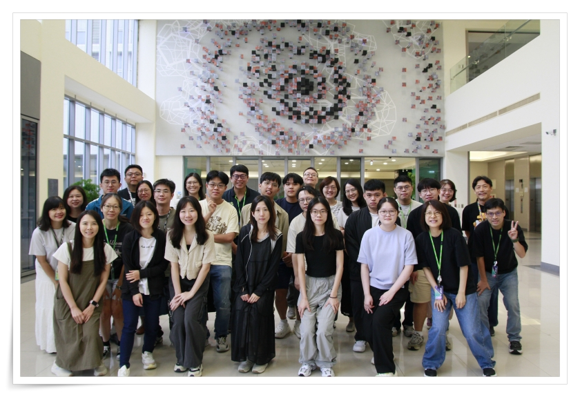
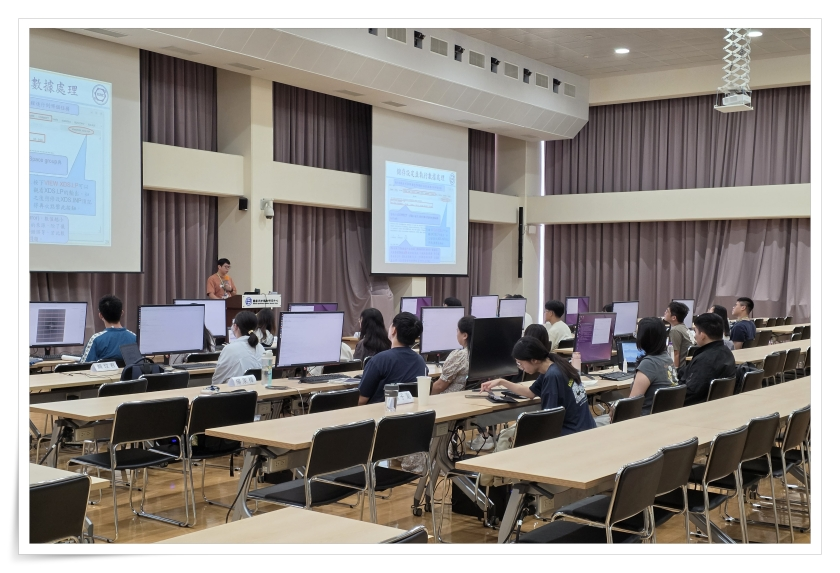
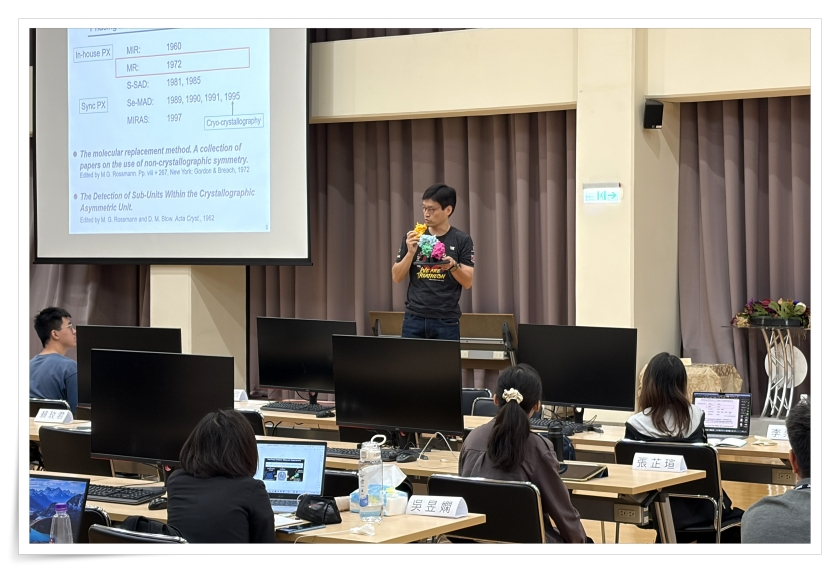
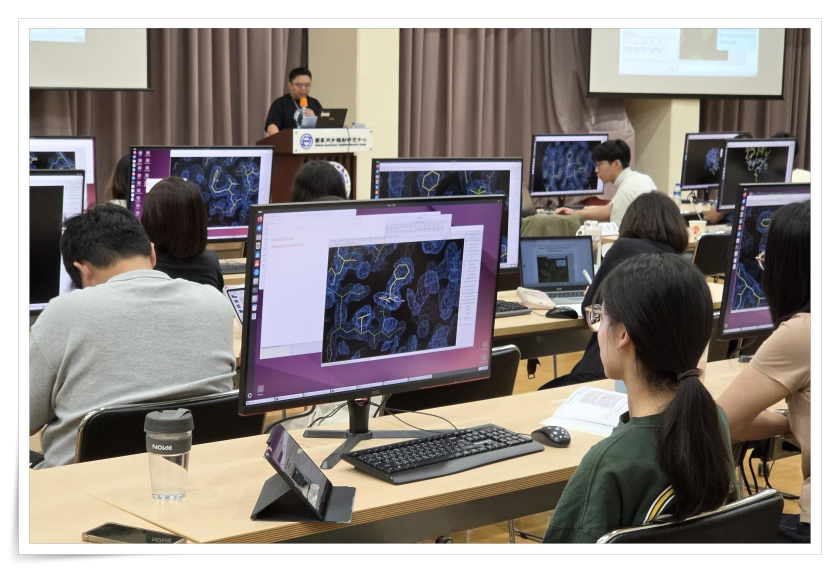
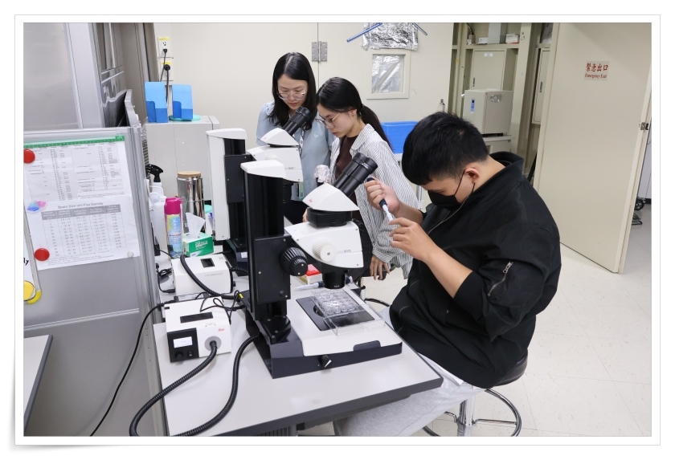
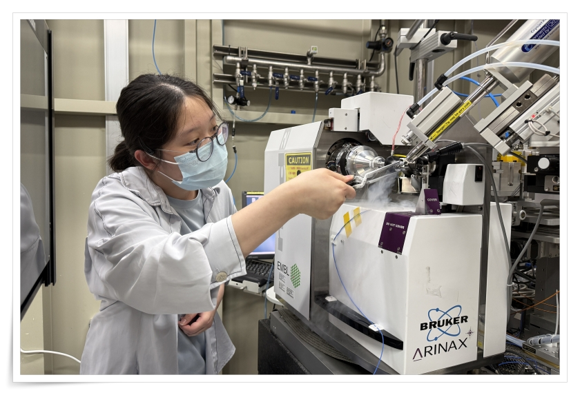
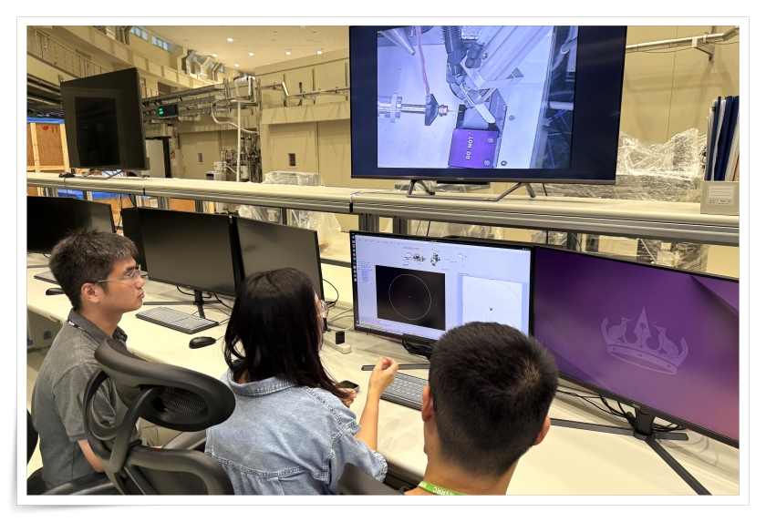
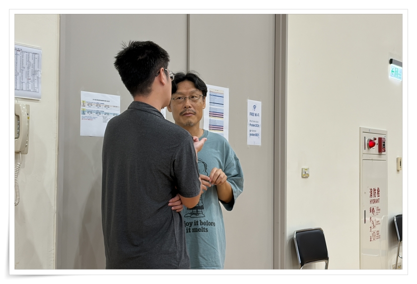

教學與行政團隊
主辦人
黃婉婷 小姐
專業講師群
陳懿慧、黃駿翔、周重光、趙俊雄、曾建璋、姜政宏、黃怡珍
實習助教與行政團隊
李宜靜、柯金伶、姜政宏、陳怡蓉、陳懿慧、黃怡珍、葉孋嬋、黃楨盈、陳慧珊、邱采綺
課程規劃
| Day 1 | Day 2 | Day 3 | Day 4 | Day 5 |
|---|---|---|---|---|
| 蛋白質長晶與晶體對稱性 基礎繞射原理 |
數據收集策略優化 XDS 數據處理實作 |
相位問題與解法原理 SAD Phasing 實作 |
分子置換法實務 Ligand Search 實作 實驗站導覽 |
輻射傷害評估 低溫結晶學實務 |
課程滿意度亮點
各項指標滿意度總和均達 100%
📖 理論課程 (Top 3)
🔬 實習操作 (Top 3)
學員精選回饋
「講解非常有脈絡，而且提供網站也非常有價值。 (Introduction of Protein Crystallization)」
「對於晶格對稱性的基本介紹相當清楚，聽完後能更理解是如何從七大晶系演變成空間群的。 (Introduction of Crystal Symmetry)」
「老師對於繞射的基本原理講解的很清楚，還有很多數學相關的原理。但我對於向量和平面的一些看法還不是很熟悉，希望能有簡單的例子能更讓人更懂。 (Basic of X-ray Diffraction)」
「清楚說明phase的重要性，有助於了解數據處理的目的，且也說明各種方法的用途和優缺，對實際應用上有一定的幫助。 (Phase Problem and Phasing Methods)」
「加深了我對未知phase的解析，對應於昨天作業中所實際處理的資料集。 (Se-MAD/SAD and S-SAD Data Collection Strategy)」
「將理論透過簡易的語言來幫助學習，且實體教材有利於理解，在實際應用上很有幫助。 (Introduction of MR Phasing)」
「這次對輻射傷害的了解，讓我會注意我的不同樣品要如何去注意對數據的影響，非常完整的解說。 (Radiation Damage on Cryo-cooled Protein Crystals)」
「對於各種低溫實驗技術的講解清楚，把所有平常會見到的狀況都講了一次，更好預防了。 (Cryo-Technique in Protein Crystallography)」
「步驟講解的很仔細，讓沒碰過軟體的人也能順利跑完整個流程，有了初步的概念。 (Practice of Data Processing) 」
「老師講解的非常仔細，在操作上我能更知道自己在做什麼。 (SAD Phasing) 」
「流程很清楚，後續練習如何refinement，附錄Alternative websites的資源很有幫助。 (Ligand Search by MR)」
「對蛋白質晶體上機的流程講解清楚。對樣品處理和上機有了初步的概念，且也動手操作，學習到了實作部分。 (Optical Screening, Cryo-Sample Preparation, Mounting and Centering) 」
「課程內容很紮實，學到很多額外的知識。對結構生物領域上求學及研究方面有立即且實質上的幫助。」
「我覺得收穫了很多實驗上比較懵懵懂懂的地方，吸收了很多新的知識。」
「雖然我的研究領域是小分子晶體，不過蛋白質相關的知識還是對於晶體學的一些操作很有幫助。」
「我覺得電子的講義更方便我們進行網絡的查詢，在不懂的地方可以第一時間補足資訊，喜歡這次的改動。」
「謝謝小老師這幾天的照顧，學得很紮實，還好有小老師，不然會學得不明不白，感恩的心感謝有你。」
「小老師每個步驟都很詳細說明也有實際實驗的補充，很有幫助。」
🎯 實質幫助與收穫
- 對結構生物領域求學及研究有立即且實質上的幫助。
- 學員成功學會從簡單的繞射圖譜得出複雜的蛋白結構，並掌握數據處理軟體。
- 蛋白質相關知識亦對於小分子晶體領域的操作帶來極大啟發。
💡 持續優化行動 (Action Items)
- 講義形式：學員皆認可使用電子講義，將持續優化數位教材設計。
- 教材調整：針對 Crystal Symmetry 課程中較難吸收的符號意義，明年將重新編排講授方式。
活動照片精選
2026 年度訓練課程精彩瞬間，包含理論授課、軟體實作與實驗站導覽。

大合照

理論課程

理論課程

軟體實習課程

TPS 實驗站分組實習

TPS 實驗站分組實習

TPS 實驗站分組實習

課後交流